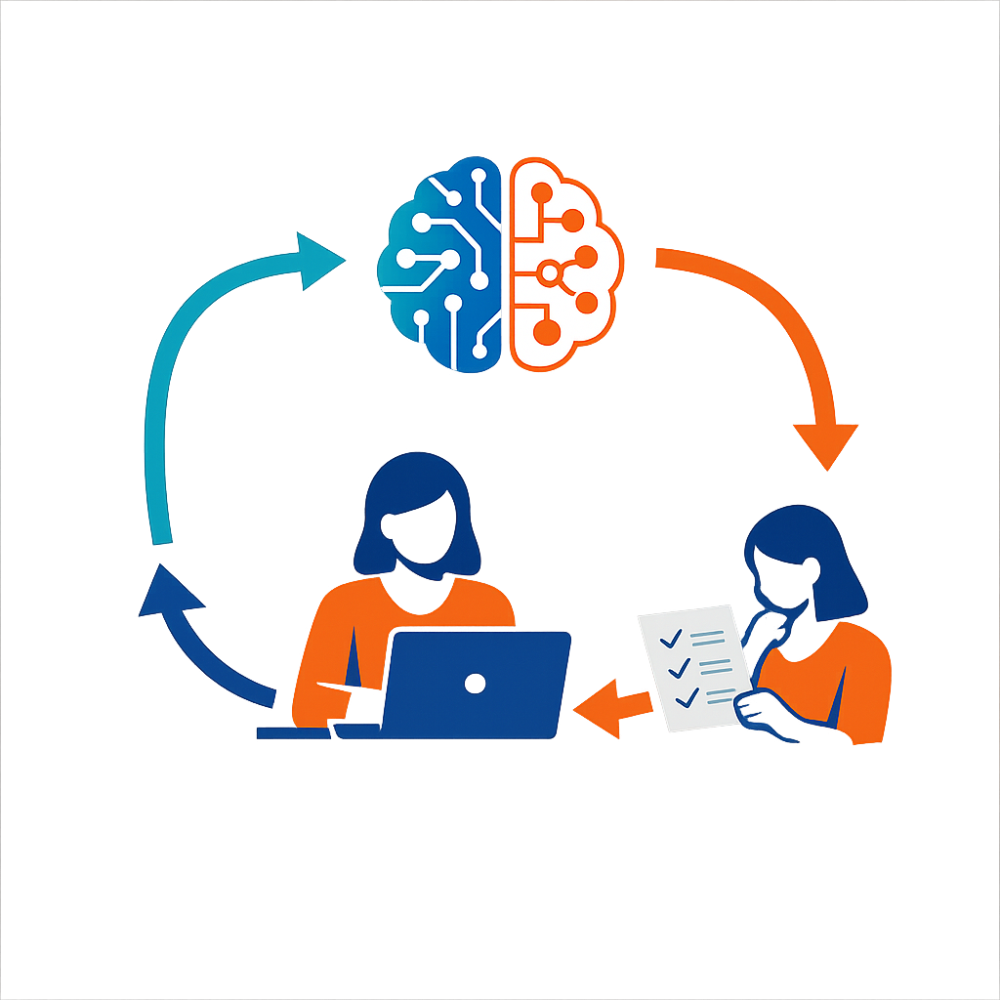

Unreflektierter KI-Einsatz kann Stereotype reproduzieren und birgt datenschutzrechtliche Risiken.
~43.000 Sozialarbeitende in Österreich, überwiegend weiblich. Technologieentwicklung überwiegend männlich.
KI reproduziert Verzerrungen etwa bei Alter, Ethnie oder Geschlecht.
Systematisches Literatur-Review zu Bias in generativer KI
Prompt-Experimente mit mehreren KI-Modellen
Modulares Prompting-Framework mit Bias-Kontrolle
Bedarfserhebung bei ~150 Fach- und Führungskräften
Workshops mit Praktiker:innen der Sozialen Arbeit
Open-Source-Orientierungsleitfaden (GitHub, MIT-Lizenz)
Empirische Studie zu KI-Nutzung und Barrieren bei Fachkräften
Modulare Bias-Kontrolle für generative KI, praxisnah validiert
Open-Source-Handbuch für chancengerechte KI-Nutzung in der Sozialen Arbeit
Transfer-Workshops für Trägerorganisationen und Ausbildung

Promptgestaltung als Hebel für chancengerechte KI-Outputs: Der Mensch steuert aktiv, wie KI antwortet – und prüft das Ergebnis.